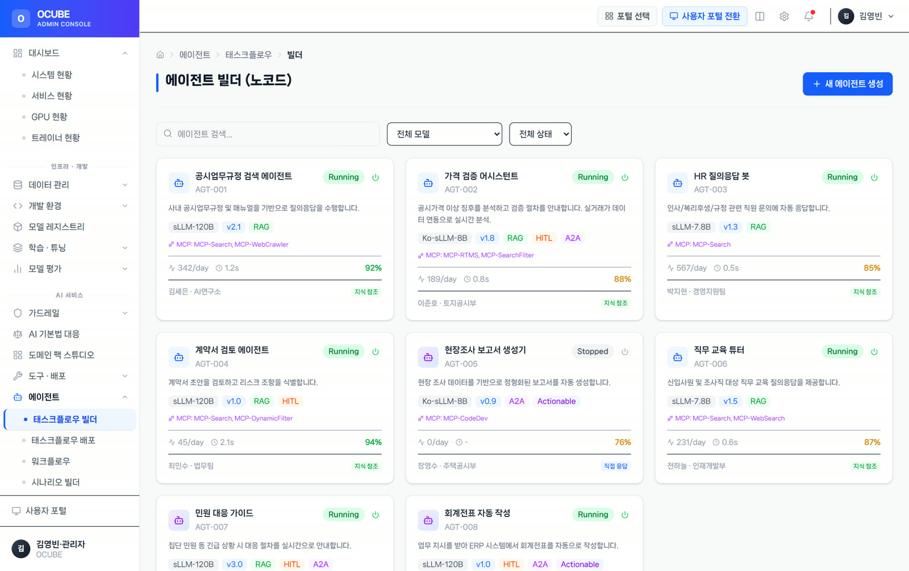
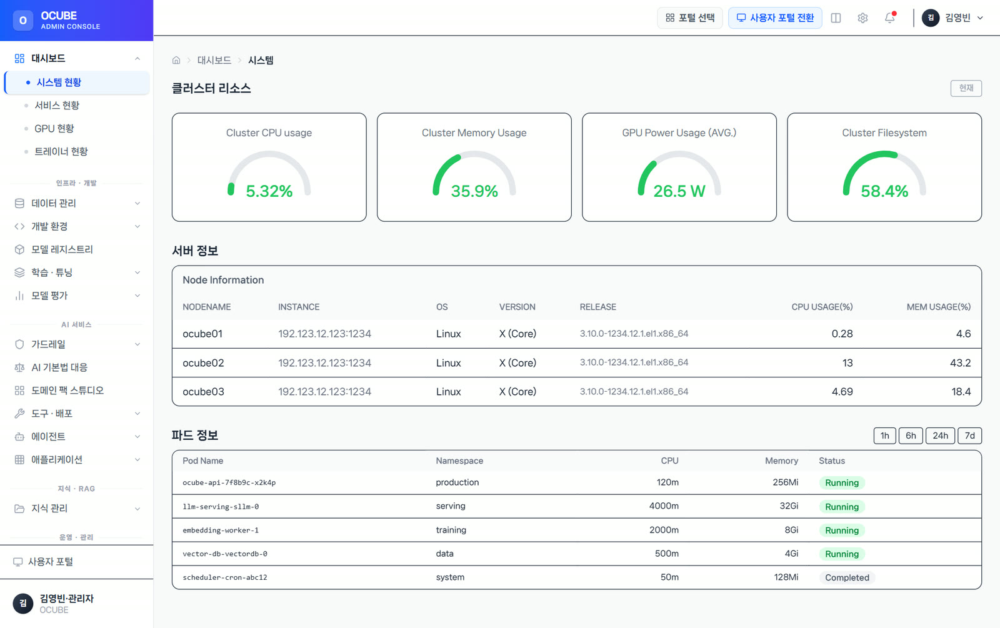
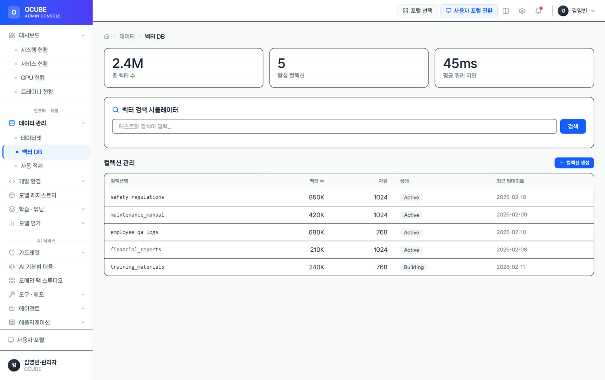
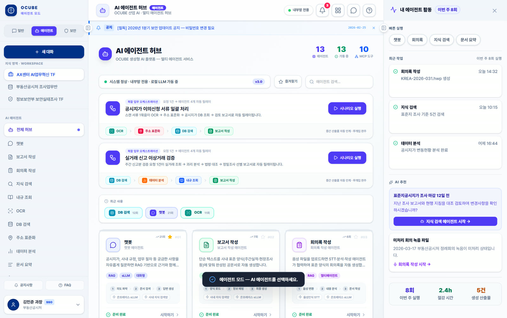

로봇 조립 라인 이상 조기감지
해결 설비 신호(토크·
현장마다 흩어진 데이터와 AI를 따로 운영하면 연결과 확장이 어렵습니다. QData가 데이터를 정리하고, QFactory·QAgent가 판단과 업무를 지원하며, Cubeon이 승인·배포·운영을 하나의 흐름으로 연결합니다.

모델만 도입해서는 현장 업무가 바뀌지 않습니다. 데이터 정리부터 판단·승인·조치까지 이어지는 운영 구조가 필요합니다.
Cubeon은 알람만 보내는 플랫폼이 아닙니다. 위험도에 따라 담당자가 판단하고 승인한 뒤 현장 시스템이 조치하도록 연결하며, 충분히 검증된 업무만 단계적으로 자동화합니다.

운영 관제 콘솔 — 프로토타입 예시 화면
QData가 설비·
AI 모델과 에이전트를 배포·

모델 레지스트리·
설비·

벡터 DB·
설비·

공정 데이터 분석·
여러 시스템의 데이터와 문서를 자연어로 조회·

AI 에이전트 허브 — 프로토타입 예시 화면
모빌리티·
범용 AI가 아니라, 현장에서 실제로 돌아가는 산업 AI의 조건입니다.
이상 징후를 알리는 데서 끝내지 않고, 담당자의 판단·
임베디드·
클라우드·
OPC-UA·
상용 LLM API와 온프레미스 sLLM을 현장 조건에 맞게 유연하게 운영합니다.
HITL 승인·
해결 설비 신호(토크·
해결 충전 인프라 관제·
해결 HCE 선불카드·
현장에서 가장 자주 나오는 의구심에 정면으로 답합니다.
외부 AI에 우리 회사 데이터가 새지 않나요?
상용 LLM API부터 사내 서버에서만 도는 온프레미스 sLLM까지 선택형입니다 — 데이터를 밖으로 내보낼 수 없는 폐쇄망 환경도 대응합니다.
AI가 틀린 답(환각)을 하면요?
RAG·
개발자가 아니어도 쓸 수 있나요?
QAgent는 별도 SQL 작성 없이 자연어로 데이터를 조회·
온프레미스·
클라우드 · 온프레미스 · 폐쇄망 3가지 배포를 지원합니다(Cubeon). 데이터 규제 환경에 맞춰 고릅니다.
전면 교체 없이 일부부터 시작할 수 있나요?
PoC로 효과가 큰 과제부터 시작해 현장 시스템에 연결하고 단계적으로 확장합니다. 처음부터 모든 시스템을 바꿀 필요는 없습니다.
데이터가 정리돼 있지 않은데 괜찮나요?
이기종·